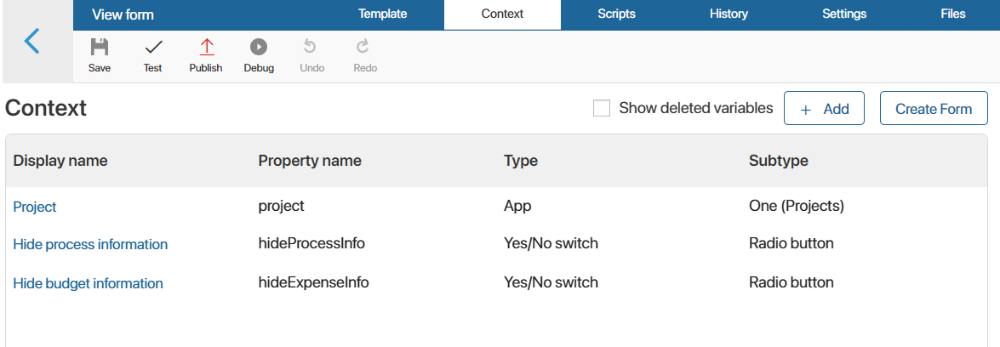
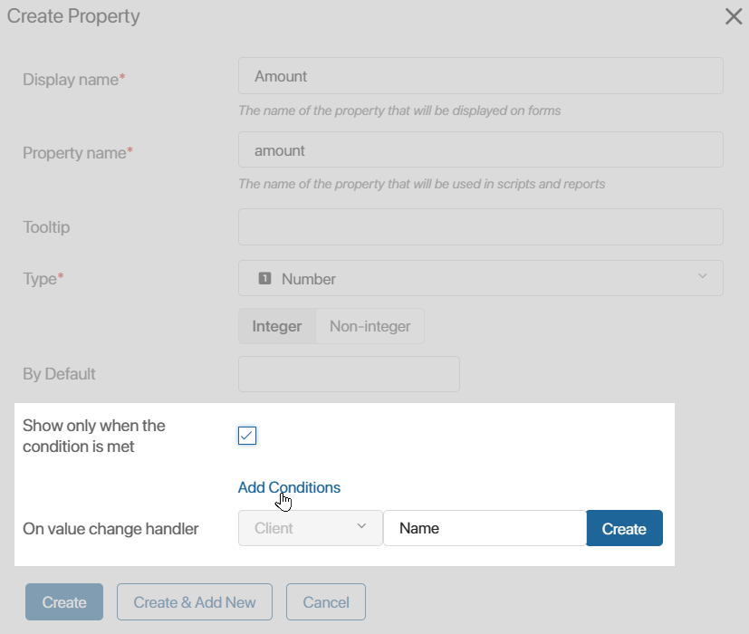
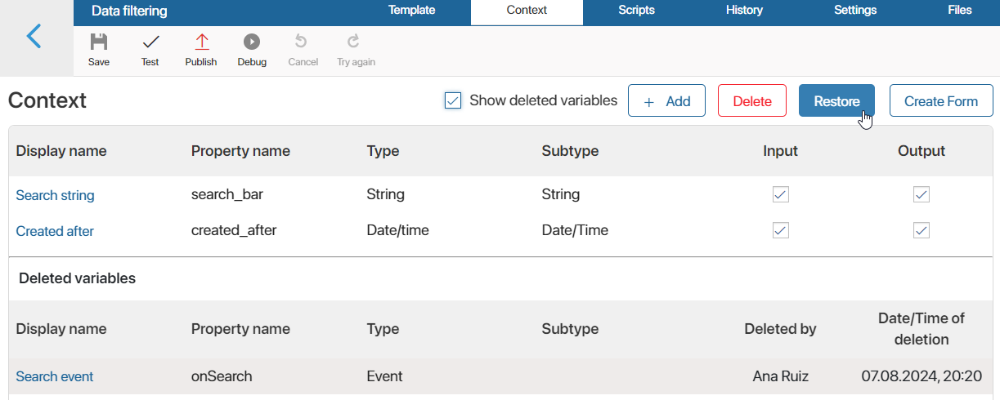
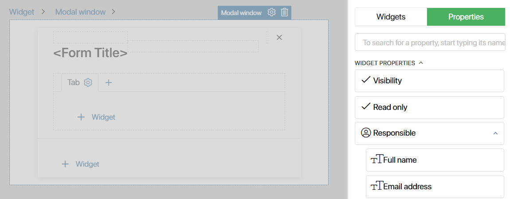
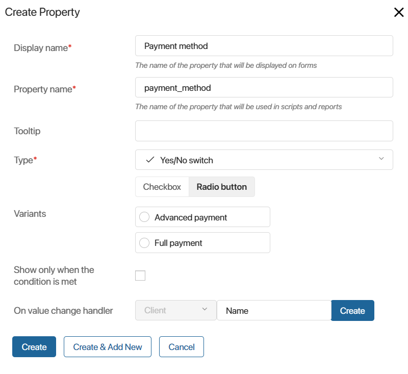
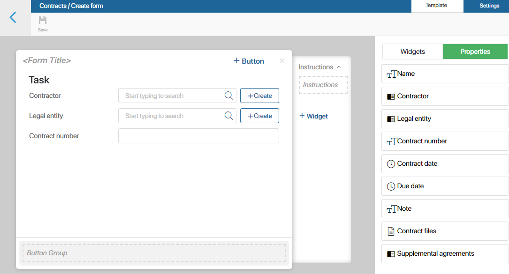

Configuring interfaces and writing scripts requires the use of context variables. Variables determine specific values in widgets, for example, in counters. They are also used to design the layout of fields, show or hide page components, etc.
There are two types of contexts: widget context and app context.
Widget context
The widget context are service variables for widget configuration. They are used in scripts that define the widget’s behavior, as well as for fetching information from apps, uploaded files, etc.
You can add such a variable in the interface designer on the Context tab.

Add a variable to the context
Click + Add and create the variable of the type you require. Read more about the types of variables available in the system in System data types.
When creating a variable:
- You can only use English letters to set property names. We also recommend using meaningful names that are easy to understand: for example, Username instead of Var123.
- You can enable the following additional options for all the variables, except for the property of the Event type:
- Show only when the condition is met. Specify the conditions under which the field on the Template tab will be displayed in the widget. In this way, you can configure the widget that adjusts to the user’s actions. For example, if an employee sets the Yes/No switch to Yes, an additional field will appear next to it.
- On value change handler. Add a function that will run if the value of a variable changes. For example, if the discount is increased, the order amount will be automatically recalculated. This option allows you to use the variable as a service one, for example, for intermediate calculations. You don’t need to place such a variable on the Template tab.

Actions with a variable on the Context tab
You can select a variable and then apply the available actions to it:
- Edit. Click its name and change it.
- Delete. You can delete a variable if it is not used in the template of a form or a widget.
- Restore a deleted variable. To do that, enable the Show deleted variables option, select the required string in the list that appears and click Restore. You can also permanently delete a variable from this list without the possibility of restoration.

In a custom widget, the context includes additional options for flexible configuration. You can specify the input and output variables or edit the widget settings window. Read more about it in Additional options in the context of custom widgets.
Use context variables on the Template tab
Variables added on the Context tab are also displayed in the right panel of the designer on the Properties tab. You can place them on the widget template. In this case, the list of nested fields is available for properties of the App and Users types with the One subtype. In addition, you can find the widget system variables on this tab.

Example of using widget variables
Let’s say you want to add a column with payment instructions to the order form. These instructions have to be shown only if the sales rep selects Full payment as payment type when creating a new order.
In the interface designer, on the Context tab, create a Yes/No switch variable. This variable allows users to select one of two options. You can customize their names. In our case, let’s use Advanced payment and Full payment instead of Yes and No.

Next, go to the Template tab and place the variable on the page so that users are able to select one of the payment options when creating a new order.
Add the Column widget to the form. In its settings, click the  icon next to the Hide field. Then click the <Not defined> link and select the Payment type variable created earlier. Publish the widget to apply the changes.
icon next to the Hide field. Then click the <Not defined> link and select the Payment type variable created earlier. Publish the widget to apply the changes.
Now, when a user selects the Full payment option as a payment method, the hidden column with the order processing instructions will appear.
You can use the same variable in a script, for example, with the On mouse enter handler of the Button widget. Then the tab will appear the moment the user hovers the cursor over the button. Read more about it in Scripts in widgets.
App context
The App context is the app fields that users fill in or view when working with app pages. For example, fields for entering the last name, order amount, file upload, etc.
You can configure app properties in the standard mode or advanced mode and in the interface designer.
In the interface designer, app properties are listed on the right-side panel on the Properties tab. You can drag these properties to the canvas and place them in the appropriate order.

Read more about forming properties in Context tab.
To learn more about setting up forms in the interface designer, see Form templates.
Found a typo? Select it and press Ctrl+Enter to send us feedback